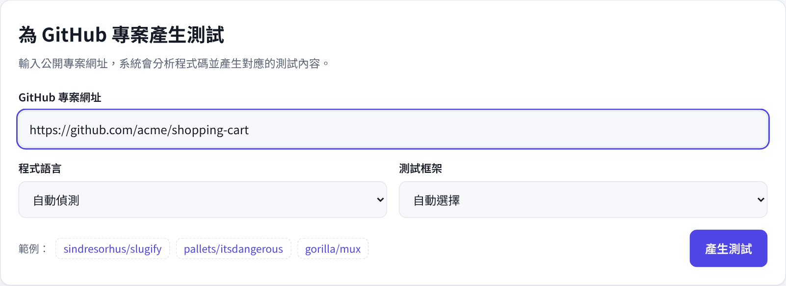
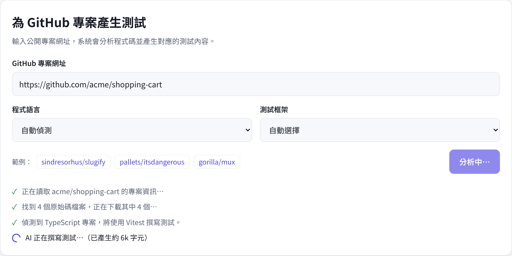
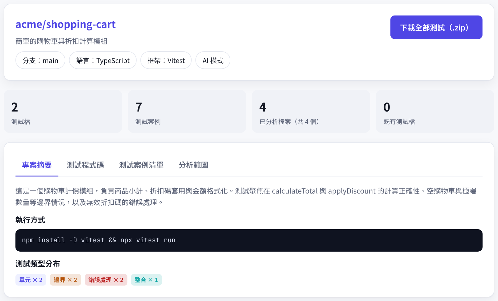
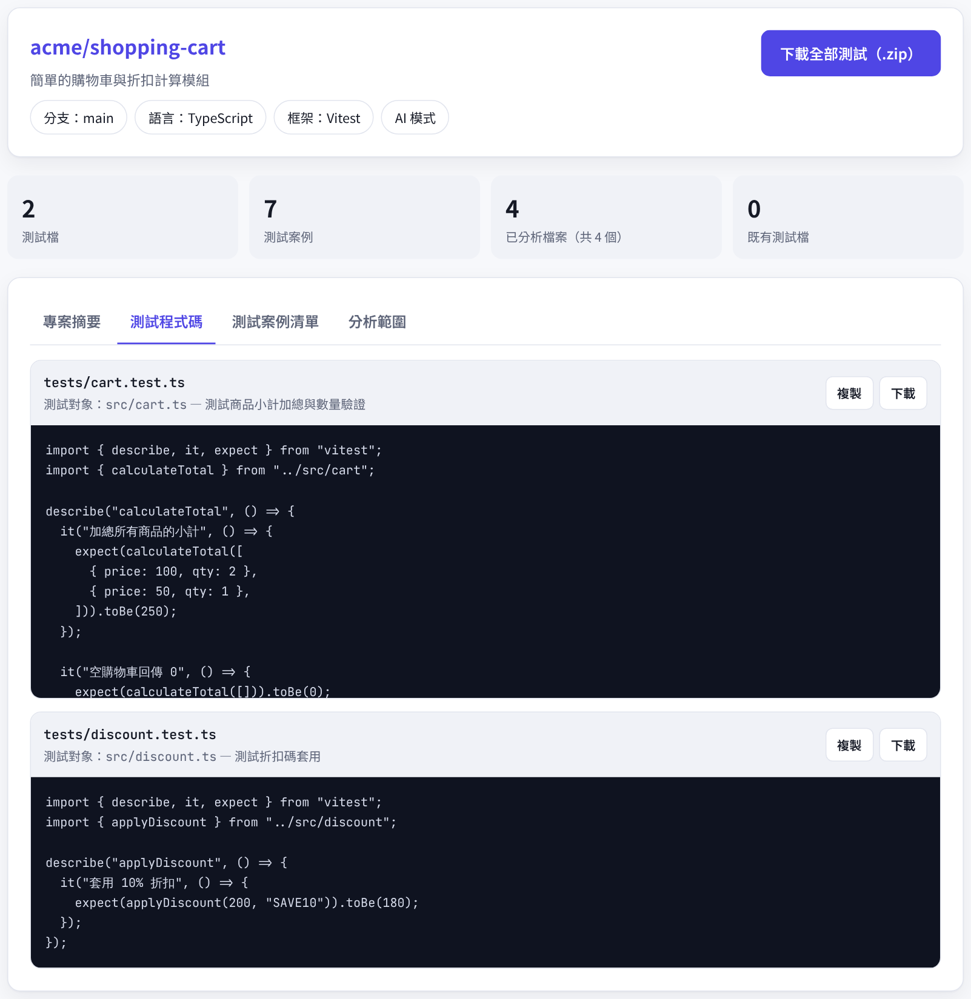
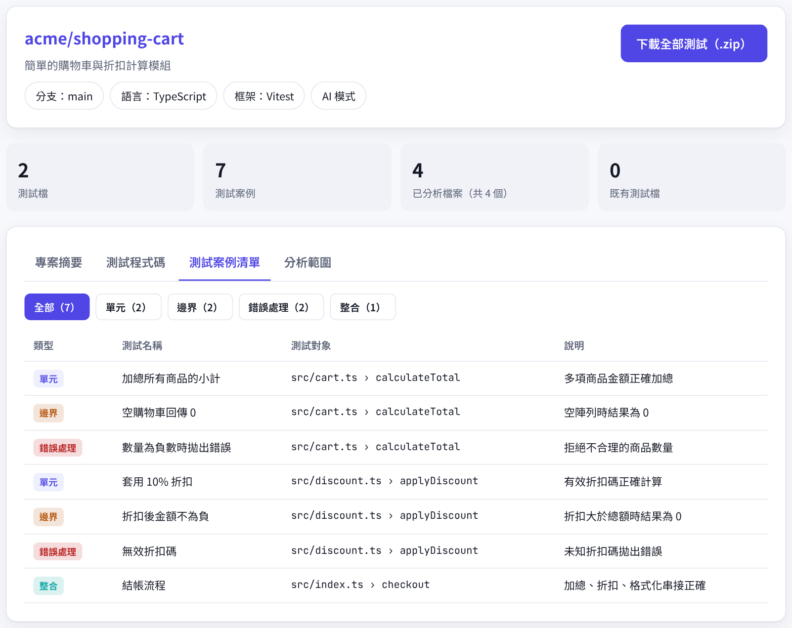

YourValidationAI 會讀取你的專案原始碼、理解每個函式的行為，並依照專案使用的語言與框架，自動撰寫涵蓋正常情況、邊界情況與錯誤處理的測試。
把寫測試最花時間的部分交給 AI，你只需要審查與執行。
自動分析檔案結構、相依套件與既有測試，挑出最核心的模組優先測試，避免與現有測試重複。
每個函式都會產生正常輸入、邊界情況與錯誤處理三類測試，外部依賴（網路、資料庫）自動 mock。
偵測專案語言與設定檔，自動選用 Jest、Vitest、pytest、Go testing、JUnit 等慣用框架，也可手動指定。
除了測試程式碼，還會列出每一個測試案例要驗證什麼，方便團隊審查涵蓋範圍。
每個測試檔都標示建議放置的路徑，可單獨複製，或一次下載全部檔案直接放進專案。
只讀取公開專案，分析完成後不保留任何原始碼。也可以自行部署，在自己的環境中使用。
從貼上網址到拿到測試，通常只需要一到兩分鐘。
貼上公開專案網址，例如 https://github.com/owner/repo，也可以指定分支。
系統下載核心原始碼與設定檔，判斷語言與測試框架，再由 Claude 理解每個模組的行為。
瀏覽專案摘要、測試案例清單與完整測試程式碼，複製或下載後即可在本機執行。
從打開介面、輸入專案，到拿到測試程式碼，每個畫面都在這裡。
產生測試的介面網址是 /app，有兩種方式可以打開：
在「GitHub 專案網址」欄位輸入要產生測試的公開專案，支援以下格式：
https://github.com/owner/repoowner/repo（簡寫）https://github.com/owner/repo/tree/分支名稱（指定分支）「程式語言」和「測試框架」預設會自動偵測，想指定時再從下拉選單選擇。不知道要測哪個專案？點「範例」裡的專案名稱就會自動填入。最後按右下角的 產生測試。

按下按鈕後，表單下方會即時顯示每個步驟的進度：
一般專案約需一到兩分鐘，期間請不要關閉頁面。若網址錯誤或專案不存在，這裡會顯示紅色的錯誤訊息。

完成後，下方會出現結果區：

切換到「測試程式碼」分頁，每個測試檔都會標示：
tests/cart.test.ts想一次全部帶走，按右上角的 下載全部測試（.zip），解壓縮後直接放進專案即可。

「測試案例清單」分頁用表格列出每一個測試要驗證什麼，方便你或團隊審查涵蓋範圍。上方的按鈕可以依類型篩選：
最後的「分析範圍」分頁會列出哪些檔案被分析、哪些因為太多而略過，以及專案原本就有的測試檔。

把測試檔放到建議的路徑後，執行「專案摘要」分頁中提供的指令，例如：
npm install -D vitest && npx vitest run
如果有測試失敗，可能是 AI 的假設需要調整，也可能是你找到了一個真正的 bug，建議逐一檢查。
不是空泛的範本，而是根據你的程式碼寫出具體輸入與預期輸出的測試。
// tests/cart.test.js — 由 YourValidationAI 產生 import { calculateTotal } from "../src/cart"; describe("calculateTotal", () => { it("加總所有商品的小計", () => { expect(calculateTotal([ { price: 100, qty: 2 }, { price: 50, qty: 1 }, ])).toBe(250); }); it("空購物車回傳 0", () => { expect(calculateTotal([])).toBe(0); }); it("數量為負數時拋出錯誤", () => { expect(() => calculateTotal([{ price: 10, qty: -1 }])) .toThrow(); }); });
自動偵測，也可以在產生前手動指定。
公開服務只讀取公開專案。若要分析私有專案，可以自行部署 YourValidationAI，並在伺服器設定具有讀取權限的 GITHUB_TOKEN。
系統會依重要性挑選最多 40 個核心原始碼檔案（約 30 萬字元）交給 AI，並在結果中列出未納入分析的檔案。若想聚焦特定模組，可以輸入指向該分支的網址。
AI 產生的測試是很好的起點，但仍建議在執行前審查。若某個測試失敗，可能是測試假設有誤，也可能是你找到了一個真正的 bug。
當伺服器沒有設定 AI 金鑰時，系統會以靜態分析找出公開函式，產生可自行補完的測試骨架。設定 ANTHROPIC_API_KEY 後即可使用完整的 AI 模式。